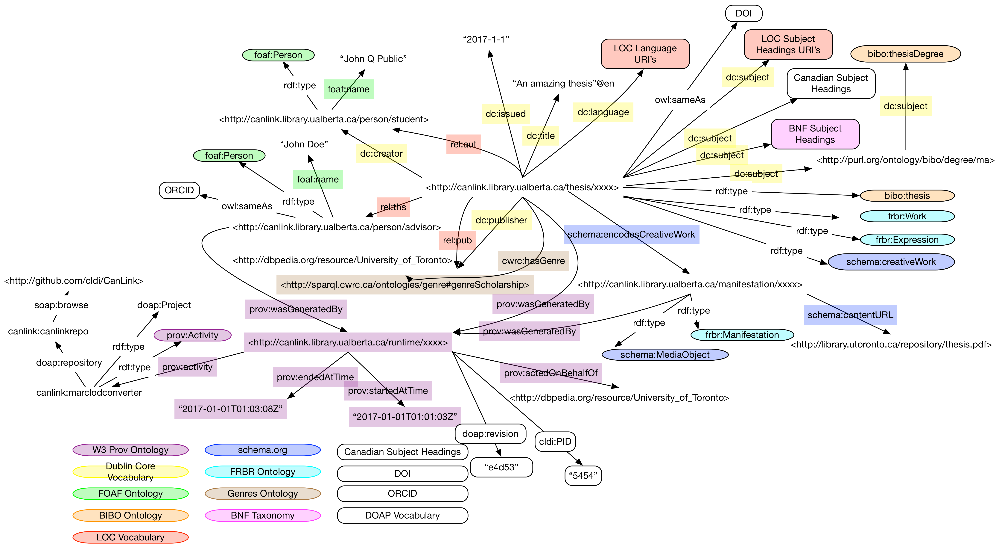

Canlink Ontology Specification - ONTOLOGY_VERSION

The CanLink ontology ties together several vocabularies to represent a Canadian thesis collection.
Working Draft — ONTOLOGY_LONGDATE (Version Française)
- This version:
- http://canlink.library.ualberta.ca/ontologies/cldi-ONTOLOGY_DATE.html
(owl-rdf/xml,
ttl,
nt)
- Latest version:
- http://canlink.library.ualberta.ca/ontologies/cldi.html
(owl-rdf/xml,
ttl,
nt)
- Last Update: ONTOLOGY_VERSION
- Date: ONTOLOGY_LONGDATE
- Authors:
- Robert Warren
- Maharsh Patel
- Sharon Farnel
- Subject Headings:
- Electronic dissertations,

This work is licensed under a
Creative Commons Attribution-NonCommercial 4.0 International License.
Abstract
The CanLink ontology ties together several vocabularies to represent a Canadian thesis
collection.
